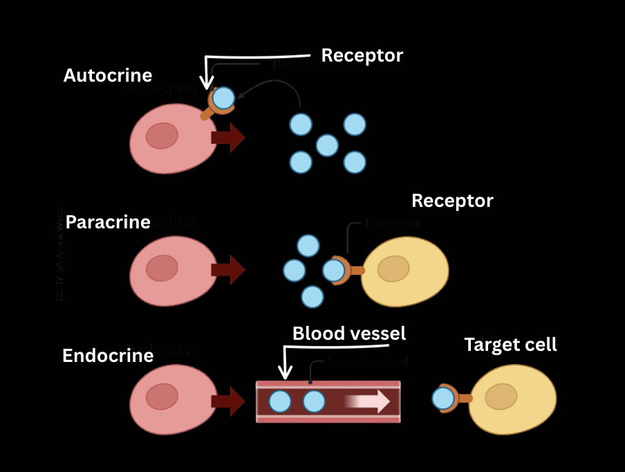
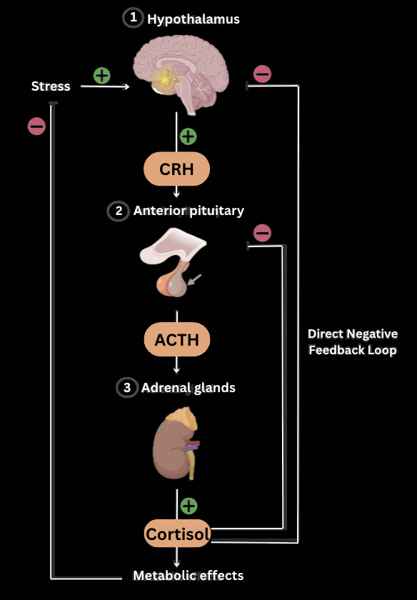

The endocrine system includes the set of all secretory cells of an organism that produce and secrete into its body chemical messengers, called hormones. They are channeled by exocytosis into the blood and through its circulation, they reach other cells in the body.
Chemical messengers can also be produced and secreted within specific organs, for the purpose of coordinating and regulating the function of cells of the same tissue (autocrine cells) or cells of another tissue, within the organ (paracrine cells). This type of regulatory function is not considered endocrine, because they are not transported through the bloodstream or lymph.
Neurotransmitters are also considered to be chemical messages of a non-endocrine nature, which are secreted from the presynaptic vesicles and diffuse into the synaptic clefts.
| Endocrine glands | Exocrine glands | Mixed glands |
|---|---|---|
| No excretory ducts. Their secretions (hormones) are secreted into the blood or lymph. | They have excretory ducts, through which they channel their secretions into body cavities. | Both an endocrine and an exocrine function. |
| Pituitary | Sweat | Pancreas |
| Pineal | Salivary | Testes |
| Thyroid | Sebaceous | Ovaries |
| Parathyroid | Ceruminous | Liver |
| Adrenal | Mammary | Kidney |
| Thymus | Gastric | |
| Hypothalamus | Intestinal | |
| Adipose tissue | Cowper's | |
| Placenta (temporary) | Lacrimal | |
| Heart | Prostate |
Lipid soluble hormones (all steroid hormones and thyroid hormones T3 and thyroxine T4) can easily pass through the phospholipid bilayer of the cell membrane of the target cells and enter them. Water soluble hormones cannot—they must bind to a receptor on the membrane which triggers internal enzymatic reactions.
Peptide hormones include: amines, polypeptides, proteins, and glycoproteins. They are water soluble, meaning they require target cells to bear specific protein receptors/channels to recognise them.
The hormone-receptor complex molecule can:
In the body of every organism, there are receptors, at certain control centers, that perceive the changes that occur inside it. These receptors, (chemoreceptors, baroreceptors, osmoreceptors, etc.) create nerve impulses, which end up in the central nervous system and through the autonomous nervous system, each gland receives the relevant information about its secretory action.
The pituitary gland is a small endocrine gland located at the base of the hypothalamus and consists of two separate parts. The anterior part is called the anterior lobe or adenohypophysis. The posterior part is called the posterior lobe or neurohypophysis and is an extension of the hypothalamus, with many axons of neurosecretory cells ending here.
The adenohypophysis has secretory cells and therefore produces its own hormones that it then secretes into the blood to regulate the secretory function of a lot of other glands. In contrast, neurohypophysis does not produce hormones. Instead, hormones synthesized in the hypothalamus and secreted by its neurosecretory cell are stored in the neurohypophysis and channeled to the bloodstream through it.
The hypothalamus is part of the brain with an endocrine function. The hypothalamus indirectly regulates the secretory function of glands based on stimuli that it receives from many sensory receptors of the body and from other parts of the brain. The hypothalamus regulates the pituitary by sending releasing factors, which are produced by its neurosecretory cells and are secreted into the hypophyseal portal circulation. The hypophyseal portal circulation consists of a complex of capillary blood vessels of the hypothalamus.
Written by Alexandros Samoutis